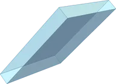
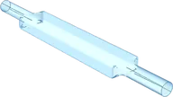
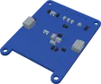
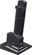
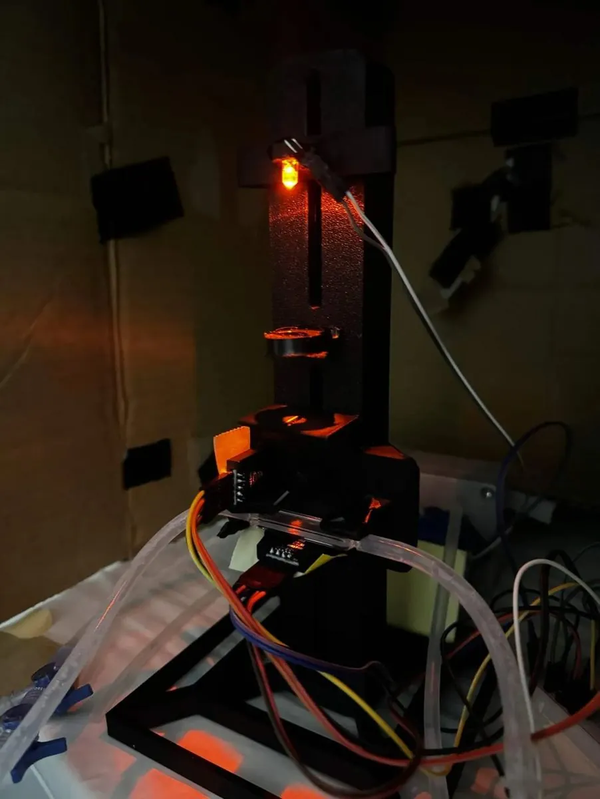
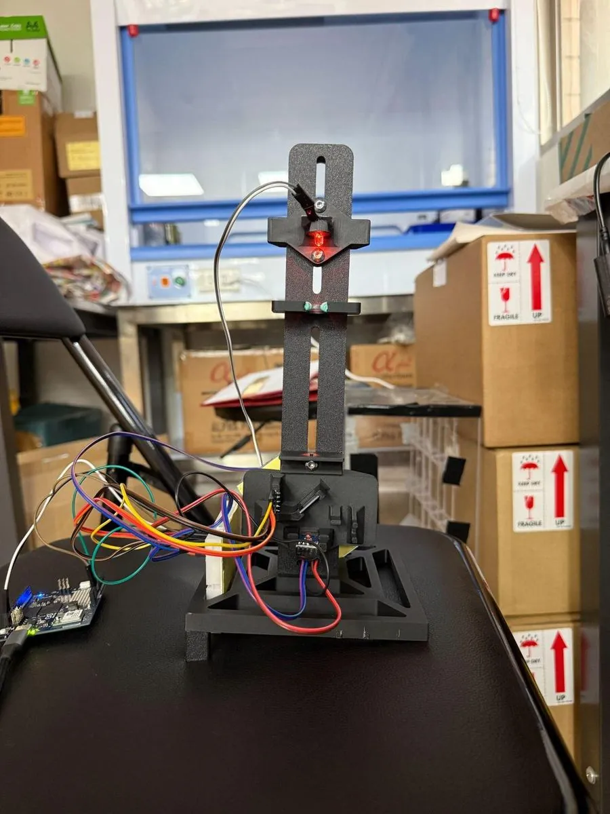
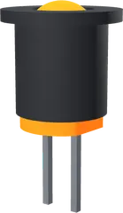

RELEAF In‑Line
Flow‑Cell Photometer
A subsystem of the RELEAF bioreactor. The in‑line flow‑cell photometer is the bioreactor’s optical‑density monitor. It draws continuous, live data from the lumen loop of our hollow‑fiber bioreactor by passing the medium our bacteria live in through a flow cuvette with a 0.2 mm light path, where the optical density of the bacteria is recorded and plotted on a continuous graph — without ever drawing a sample.
This record reports the design of the photometer and the decisions behind it, as background for anyone reproducing this one component. Not everyone will need the assembly guide for the whole bioreactor, and some readers will only want to rebuild this part of our hardware, so the material list comes first and a shortened assembly guide belongs at the bottom a draft is in the doc’s assembly guide (Photometer Step Writing); not on this page yet. The photometer’s eight design–build–test–learn cycles are summarised just below, and written up in full on the bioreactor page.
How we got here · 6 written up, 2 outlined
Eight DBTL Cycles
Cycles 1 to 5 took the photometer from a bench layout to V4, the build this record describes, and cycle 6 checked its readings against the BioDrop; cycles 7 and 8 are outlined, not yet written. Each card gives what the cycle changed (D) and what it taught us (L), and opens the cycle on the bioreactor page.
-
 Bench layout
Bench layoutCycle 1
Light path
- Design:
- Optics clamped in helping hands, only the lens free to move
- Learn:
- Its measured spacings (5.5, 10, 2 cm) set every later build
Here: section 2.2, section 3.5
-
 V1
V1Cycle 2
Flat and adjustable
- Design:
- One printed rail, every part sliding, the cuvette in the loop
- Learn:
- Bubbles parked in the flat beam, and loose mounts drifted
Here: section 3.2, section 3.4
-
 V2
V2Cycle 3
Vertical
- Design:
- The light path stood upright, its seats tightened
- Learn:
- The ~20% gap to the BioDrop was mostly the blank, not the optics
Here: section 3.4, section 5.1
-
 Wedge stand
Wedge standCycle 4
Angled stand
- Design:
- The body tilted on a printed wedge; gas bled from the loop
- Learn:
- The tilt holds; the reference moved 6.4%, so enclose the path
Here: section 3.4
-
 V4
V4Cycle 5
The 22 °C growth curve
- Design:
- Fixed mounts, TPU‑lined seats and snap‑in covers
- Learn:
- One unbroken series past 400 h; noise ragged above ~0.8 OD
Here: section 1.2, section 1.3, section 3.3
-
 Test 2 chart
Test 2 chartCycle 6
Calibration with TiO2
- Design:
- Two TiO2 series, read against the BioDrop
- Learn:
- Raw readings within a median 3.8%: no calibration needed
Here: section 5.2
-
Cycle 7
Calibration with SiO2
Headings only in the doc. SiO2 is the iGEM standard for OD600; cycle 6 deferred it as a confirmation step.
Here: section 5.2
-
Cycle 8
Simplified photometer
Headings only in the doc. Its outline: no paralleling lens, re‑run against the BioDrop.
Here: Part 6
Final Product
1.1 Material List and Pricing
The full bill of materials is below, itemised to the individual component with part numbers and unit costs in US dollars. Every part is listed on its own, so that anyone rebuilding the device has full clarity on each component. The animation at the top of the page follows the beam through the optical parts; the pictures in the table are the parts’ own CAD models, in the animation’s colours.
| Component | Specification | Unit cost (USD) | Total cost (USD) |
|---|---|---|---|
| Light path in the order the light meets it, as in | |||
| LED | 1× 600 nm | not costed yet | not costed yet |
| Paralleling lens | part number | not costed yet | not costed yet |
 Beam splitter |
90 : 10 split (2.2) part number | not costed yet | not costed yet |
 Flow cuvette |
part number | not costed yet | not costed yet |
 Lux sensor |
2× GY‑302 | not costed yet | not costed yet |
| Electronics wired as in | |||
| Microcontroller | 1× Arduino Uno Q | not costed yet | not costed yet |
| PCB | 2 × 8 cm | not costed yet | not costed yet |
| Transistor | 1× UTC PN2222 | not costed yet | not costed yet |
| Resistors |
|
not costed yet | not costed yet |
| Wires |
|
not costed yet | not costed yet |
| Heat shrink | 2× 2.0 × 45 mm heat‑shrink tube | not costed yet | not costed yet |
| 2510 connectors |
|
not costed yet | not costed yet |
| DuPont connections |
|
not costed yet | not costed yet |
| Male header pins | 10× bent male header pins (all connected together) | not costed yet | not costed yet |
| Body and assembly the eight printed parts are in 9.1 | |||
 Filament |
Black PLA and black TPU (soft) assembly guide: lens holder and sensor frame in PETG, CF optional, with TPU painted on | not costed yet | not costed yet |
| Fasteners and solder |
|
not costed yet | not costed yet |
| Total sum cost | not costed yet | ||
1.2 Final Photometer Assembly
We went through number of cycles: six are written up and two outlined (the eight cycles) cycles of tuning to optimise the photometer, and the final setup we landed on is drawn in . The photometer sits inside our larger bioreactor and lets farmers keep track of the bacterial density in it, so they are reminded when medium or a refill of our bacteria must be added to keep the bioreactor working.
We have since developed a more compact, simpler design, and shown that its optical‑density readings deviate little or not at all 6.3 says it has not been tested yet. We lacked the time to integrate it into our commercial bioreactor, so the final assembly reported here is our second‑to‑last photometer design. The compact one is Part 6.
- Base
- Body
- Sensor frame
- Sensor frame cover
- Body cover
- Body cover, small
- Lens holder
- LED mount
glass sensor boards

As built
1.3 The Long Run, Traced
The final assembly’s long run: engineered B. subtilis 168 at 22 °C, read in line through the flow cell, so no sampling event interrupted the culture and nothing was removed to measure it. The run passed 400 hours. Its first 336 hours, 2,132 logged points, are traced in from the live dashboard; the run is written up as photometer cycle 5 on the bioreactor page.

Late in the run the trace dropped sharply. We first guessed contamination, a second organism taking over, and that was wrong: the recirculation pump had failed, which a teammate confirmed on inspection and replaced the same evening (notebook, week 22). The pump failed with nobody watching, and the trace recorded it. Optical density alone cannot separate lysis from sporulation or settling, and the flush and reblank that would have told fouling from biology was never run, so the shape of the curve is reported as observed.
Optical Design
2.1 Wavelength Selection
We chose to work at 600 nm for three key reasons.
- It is the field standard. OD600 is the standard measure of bacterial density in culture. Matching that wavelength makes our readings comparable with the BioDrop, with published growth curves, and with anything a judge or another lab would expect from our photometer. Every report would have had limitations had we worked at 700 nm.
- It measures turbidity. Little absorbs 600 nm light, but cells scatter it strongly. Our OD600 readings are not really measuring absorbed light; they are purely turbidity. We measure how many bacteria are in the bioreactor by how much light scatters off the cells, not by what light they absorb. At 600 nm we are clear of protein and nucleic‑acid absorbance in the UV, and of most of the medium’s absorbance, which is in the blue, so 600 nm isolates the value we want to measure.
- It does not cross‑talk with our optogenetic circuit. Our CcaS/CcaR system is actuated by green and red light. A light that comes on every 10 minutes, over runs of days, weeks or even months, would be a major problem if it actuated the circuit. 600 nm sits in a strong amber, right in the middle of the green (~535 nm) and red (~672 nm) peaks of CcaS, so the photometer does not accidentally switch on protectant secretion.
2.2 Beam Splitting and Reference
The beam splitter is one of the key components of the photometer. It splits the light path in two: 90% of the light goes straight through, and 10% is sent off at a 90° angle. The stronger beam passes through the flow cuvette, which holds the continually flowing medium, before it reaches its lux sensor. The point of the split is to account for changes and degradation in the light source itself.
Our bioreactor and photometer are meant to run for very long periods and must keep their readings accurate throughout. As the years go by and the LED begins to degrade, we want to keep down how often users have to buy new components. The splitter gives us a reference sensor that measures 10% of the light directly from the source, to compare against the sample sensor, which then only has to measure the absorbance (in fact the scattering) of the bacteria in solution. These calculations are built into our software, which keeps the interface easy to navigate for a small‑scale farmer.
Mechanical Design
3.1 Design Requirements
Our photometer took many iterations, and had to overcome several design challenges before it was usable in testing. Three requirements shaped it.
-
No bubbles in the beam
The flow cuvette had to stay free of bubbles for most of the testing period for
the data to be reliable.
Addressed in 3Cycle 3 on the bioreactor page 4Cycle 4 on the bioreactor page section 3.4
-
Blind to room light
Neither the sample nor the reference lux sensor could be affected by changes in
external lighting, so the photometer works in any environment with constant data
collection.
Addressed in 5Cycle 5 on the bioreactor page section 3.3
-
Stable, with good tolerances
The structure had to be stable and well toleranced, so it assembles easily
without inconsistency in build quality, or in the data while running.
Addressed in 3Cycle 3 on the bioreactor page 5Cycle 5 on the bioreactor page section 3.3
3.2 Modelling Approach
While modelling the photometer in 3D we planned a clear path of improvement. We knew it needed darkness, an enclosed space and a strong structure, but we also knew how much modifiability and access mattered, especially early in the design process.
So we began with a loose, high‑tolerance system that could be tightened and loosened by hand to shift the positions of the sensors, lenses and other components. It was also completely open to outside light, so that we could keep adjusting it easily. To test, we switched off the room lights and closed every door and window, so that external light could not skew the measurements ().
Once testing was easy, we moved to larger, more specific design changes that locked the parts in place, and began to enclose the light path in a dark chamber. This brought the mechanism closer to the final design.

First Open and adjustable 2Cycle 2 · V1 on the bioreactor page
Then Locked and enclosed 5Cycle 5 · V4 on the bioreactor page
3.3 Mounting and Tolerances
In the final design we still wanted easy access to the inside, in case the light path shifted or a sensor broke and needed replacing, so the enclosure was designed to come off smoothly.
Snap‑on covers. An indentation runs along the whole photometer body, and the covers snap onto it. A cover comes off easily whenever the photometer needs changing (parts 4–6 in ).
Base and body printed apart. To get the best print quality, we did not print the photometer body as one piece: printed on the diagonal it would need a lot of support material, which makes the dimensions inaccurate and the whole system visually unappealing. We separated the base from the body instead, and joined them at a diagonal insertion point, which fixed both problems (parts 1 and 2).
Two filaments for a tight fit. Tolerances are integral to accurate data. In many of our earlier iterations, the seats for the beam splitter, paralleling lens and lux sensors were all too loose (they are in parts 3 and 7). Rather than risk wasting whole prints by tightening them in large steps, we combined two filaments: PLA, a cheap, hard plastic, for the main structure, and TPU, a flexible, high‑friction rubber, lining the slots of the smaller components inside. The TPU holds each component tightly without damaging it, and the change gave us a large jump in data accuracy across long test runs.
3.4 Orientation
Another important decision was the orientation of the whole photometer. We began with a horizontal design, in which the culture crossed the measuring region in the horizontal plane. We quickly found that bubbles got trapped there very easily, so we moved to a vertical, standing design to let them travel through the flow cuvette more easily.
That change did not make the drastic difference we had hoped for. While adjusting the standing design, however, we found that tilting it at a 10° angle made almost all of the bubbles leave within about a quarter of a second. Standing the photometer at an angle could save the reliability of our readings.
The tilt has stayed with the photometer through every later iteration, and has not yet proved unreliable.

01 Horizontal
Bubbles got trapped in the flat measuring region
2Cycle 2 · V1 on the bioreactor page
02 Vertical
It helped, but not the drastic difference we had hoped for
3Cycle 3 · V2 on the bioreactor page
03 Tilted
At 10°, almost all bubbles left within about a quarter of a second
4Cycle 4 on the bioreactor page
04 Final CAD
The tilt kept through every later iteration
5Cycle 5 · V4 on the bioreactor page
3.5 Individual Part Breakdown
The photometer can be seen as three distinct portions ().
- The LED housing compartment, where the 600 nm light is fired toward the sensors. It needed little change over our four iterations, apart from moving to a dedicated LED holder that holds the LED more securely in place.
- The light‑travelling region, which holds the paralleling lens and is the longest portion of the photometer. Most of it, however, is empty space, needed for the light to reach the focus of the lens at the right position.
-
The last portion, the most complicated region. It holds four things, here in the
order the light meets them (section 2.2 has more on this portion):
- the 2 mm light slit, which narrows the light reaching the sensors for more specific and accurate readings;
- the beam splitter, which splits the one light path in two: one continues through the flow cuvette and solution into the sample lux sensor, the other turns 90° with 10% of the light into the reference sensor, with no cuvette in its way;
- the flow cuvette;
- and the lux sensors themselves.
Electronics and Firmware
4.1 Breadboard, Sensors, LED
Our final photometer does not use a breadboard: it uses a soldered PCB connected to an Arduino Uno Q. The Uno Q is a small computer in itself, so it runs our code from a power supply alone, with no computer plugged in. That takes us one step closer to a cheap, accessible bioreactor, and removes one failure point from the photometer’s sensing: a computer‑to‑Arduino cable coming unplugged.
One shared ground. The Arduino has a limited number of ground ports, so the ground wires of the sensors, the LED and the transistor are all joined together.
A transistor for the LED. The transistor lets us give the LED a different voltage from the sensors, and turn the LED on and off without disturbing the running sensors. We want this because the LED’s voltage may need to rise as we scale up the bioreactor, and it is safer and more sustainable for the bioreactor not to keep the LED on around the clock. The transistor has three terminals: collector, base and emitter. The LED’s ground wire connects to the collector. Arduino pin D3 connects to the base through a 1.2 kΩ resistor, and the base also passes through a 10 kΩ resistor to join the emitter; together they meet the sensor ground wires at one Arduino ground port.
Two sensors on one bus. With a sample sensor and a reference sensor, we connect the two SDA pins together and the two SCL pins together, and run each pair to the same Arduino port. This lets one microcontroller read both sensors at the same time; the firmware reads them at separate addresses to tell sample from reference.
Two supply voltages. The LED currently takes 5 V, which may need to rise in future work once the bioreactor scales up, while the sensors need 3.3 V to run smoothly. So the two lux sensors share one power input, and the LED’s stays separate.
After all the wiring on the PCB, six wires lead out: SCL, SDA, D3, 3.3 V, 5 V and ground, which makes the last step of setting up the photometer very simple ().
4.2 Data Acquisition and Filtering
A bubble‑and‑outlier rejection filter runs on the incoming stream of readings, and the dashboard reports the rejection rate live.
A burst of fourteen. We take 14 lux readings in a short burst. If a bubble drifts past, one or two of them shoot far higher than they should. We cannot use the average of the 14, because the bubble drags the average upward, but the median (the middle value) rarely moves. That makes the median a bubble‑proof estimate of the true value.
The spread. With the median of the burst found, we take the 13 13 or 14? 14 readings give 14 distances; the demo uses 14 distances of the points from the median. The median of those distances, the MAD (median absolute deviation), says how much the clean readings wobble: tight readings give a low MAD, and loose ones a high one. The trick is the same in both steps: a median of the distances cannot be inflated by one giant bubble.
The cut. The filter rejects every reading beyond the median ± 3·MAD, and the rejected points are removed from the OD measurement, keeping the data clean. The fraction thrown out is reported as the rejection percentage the window the rate is computed over: one burst of 14?.
Take 14 lux readings in a burst
Median of the burst, the bubble‑proof centre
Median of the distances from it, the MAD
Reject beyond median ± 3·MAD
- Mean
- —
- Median
- —
- MAD
- —
- Rejected
- —

4.3 OD Calculation
Each sensor returns an illuminance in lux. The sample sensor reports the light transmitted through the culture; the reference sensor reports the light diverted before the sample. Reported OD600 comes from the ratio of sample to reference, which normalises every reading against the LED’s output and so corrects for drift in that output over a multi‑week run, if the LED degrades.
Step by step: at the start of a live reading, we take a blank and calculate K, the sample sensor reading through the cuvette and medium with no bacteria, divided by the reference sensor reading, which passes through neither the cuvette nor the medium.
With K captured, every live reading is converted with:
S is the sample sensor and R the reference sensor, both in lux.
Calibration
5.1 Blank Protocol
Our blanking protocol is extremely important: it played a large role in the inaccuracies of our early iterations. Our external OD600 instrument, the BioDrop, is normally calibrated against distilled water. Because we are measuring the OD600 of our bacteria in particular, however, we need to account for the 600 nm absorbance of the nutrient medium the bacteria are cultured in blank: medium here, distilled water in cycle 3. This change gave us almost entirely accurate data, aligning strongly with the BioDrop readings.
5.2 Calibration Procedure
Simplified Photometer
6.1 Rationale
We believe our current photometer still has room for improvement. The flow cuvette, which lets the photometer take live, continuous data directly from the bioreactor, raises the cost of the whole system by a large margin. To make the bioreactor more accessible, we began reducing the cost of the rest of the photometer. Its other costly components are the beam splitter and the paralleling lens. The beam splitter is a must‑have, because it ensures long‑term use without imprecise readings, which leaves the paralleling lens to change.
-
Stays
Flow cuvette
Raises the cost by a large margin, and is what lets the photometer read the loop live
-
Stays
Beam splitter
A must‑have: it keeps long runs free of imprecise readings
-
To change
Paralleling lens
Replaced by shaping the LED’s own output: a sanded flat cap, or another type of LED (6.2)
6.2 Design Changes
We used a paralleling lens to straighten the light path of the LED. By changing the shape of the LED’s output itself instead, either with a sanded flat cap or by switching to a different type of LED, we believe we can shrink the photometer by ⅔ and cut its cost by $70. The light‑travelling region described in 3.5 is the stretch the lens needs for its focus ().
6.3 Optical Consequences
6.4 Current Status
Specifications and Future Implications
- Measures
- OD600, in line and continuously, with no sample drawn
- Beam split
- 90 : 10, reference taken before the sample (2.2)
- Flow cuvette
- 0.2 mm path, in the lumen loop
- Slit
- 2 mm (3.5)
- Sensors
- 2× GY‑302 lux sensors at 3.3 V on one SDA/SCL pair (4.1)
- Controller
- Arduino Uno Q, runs with no computer attached
- Sampling
- About every 10 minutes (2.1) the logs average one point per 6.3–9.5 min
- Filtering
- 14‑reading bursts, cut at median ± 3·MAD, alarm above 50% rejected (4.2)
- Orientation
- Tilted 10° to clear bubbles (3.4)
- Longest run
- Past 400 hours (1.3)
7.1 Future Use
Our photometer can help any student or professor measure the optical density of their solution at 600 nm, live, during growth runs. It removes the reliance on sampling entirely, and with it the chance of human error in that whole process. These benefits come at a relatively low cost of around $150, small beside the prices of commercial laboratory spectrophotometers: the BioDrop we compared our photometer against during calibration costs $15,000.
For anyone who needs a photometer that measures optical density at 600 nm, this design brings the barrier to entry close to zero. By breaking that barrier, we make an in‑line photometer publicly accessible and easy to use.
We hope, and believe, that future uses of and developments to this design will benefit many people running their own experiments.
Limitations
8.1 Spectrophotometer
Our photometer was designed purely to measure the optical density of the bacteria in our medium, live, at 600 nm. It was not originally planned to measure across wavelengths, so integrating a light source with several colours, or with light outside the visible spectrum, would mean adapting the design. It could likely be converted easily for other single‑wavelength measurements, but it would fall short where several wavelengths must be measured at once.
Our future work includes sensors that capture a range of wavelengths. We have bought them, to capture which light, and for what, but we have not yet purchased, integrated or tested a light source able to emit multiple wavelengths.
8.2 Assembly/Blanking Process
To keep the photometer small, and for lack of testing time, we could not test different LED clip holders, so the LED does not always point perfectly straight when it is placed in its socket. That does not mean the readings will be off: by turning the LED in its clip during assembly, you can still find an orientation in which the light path lines up with the sensors. It only adds a few minutes to the assembly.

The LED in its clip
The LED mount (part 8, 9.1)
Design Files
9.1 Files and Short Description
The eight printed parts, numbered as in . Each STL downloads under a descriptive name. STEP files: listed in the doc for every part, none provided yet
- 1Base
Structural support that angles the photometer for efficient bubble travel.
- 2Body
Body structure of the photometer that all components attach to.
- 3Sensor frame
Structure that holds the beam splitter and both sensors.
- 4Sensor frame cover
Cover that blocks external light from hitting the sensors.
- 5Body cover
Cover that blocks external light along the light path.
- 6Body cover, small
Cover that blocks external light along the light path.
- 7Lens holder
Holder for the paralleling lens, for a parallel light path.
- 8LED mount
Structure that holds the LED.
From the slicer project in the doc’s assembly guide (Bambu Studio).
- Printer
- Bambu Lab X1 Carbon, 0.4 mm nozzle, textured PEI plate
- Profile
- 0.20 mm Standard @BBL X1C
- Layer height
- 0.2 mm, first layer 0.2 mm
- Sparse infill
- 20% gyroid the earlier version of this page said 15%
- Supports
- On: normal (auto), 30° threshold
- Top surface
- Line width 0.25 mm
- Filaments
- PLA Matte, TPU 95A and PETG-CF, on three plates. The guide prints plate 1 (the lens holder and sensor frame) in PETG, CF optional, and paints TPU onto its seats.